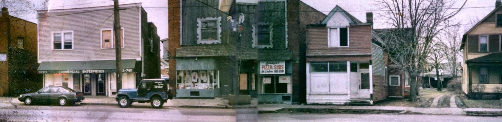

Our neighborhood.
Seventy-four years on one street in Cleveland’s south side.
We did not move to the neighborhood. We grew up in it, and we have stayed.
Fleet Avenue was the main street of Cleveland's Polish and Czech south side when Henry Sr. opened the office in 1952: bakeries, butchers, taverns, and the parish churches whose steeples still mark the skyline. Our first clients were the people who ran those shops and the families who filled the pews on Sunday.
The mills closed, the street thinned out, and a lot of businesses left. We stayed, first at 5500 and since 1987 at 5720. Many of the families we serve now are the children and grandchildren of the people who first walked in the door. Many others found us the way you did, by looking for someone who will still pick up the phone.
If you live anywhere in Northeast Ohio, we are an easy drive: just south of I-490 and a few minutes from I-77. Parking is on the street out front.

Our neighbors
The people and places that keep Slavic Village going. If you need help beyond taxes, start here.
The neighborhood
- Slavic Village Development
The neighborhood's community development corporation: housing, storefronts, events, and the farmers market. - Southeast Cleveland Resource Center
5211 Fleet Avenue. Help connecting with benefits and services, plus a daily food pantry and sharing table. - University Settlement
Serving the Broadway–Slavic Village area for a century: food pantry, youth and senior programs, and family services.
Parishes
- Shrine Church of St. Stanislaus
3649 East 65th Street. The mother church of Polish Cleveland, founded 1873. - Immaculate Heart of Mary
6700 Lansing Avenue. Founded 1894; Mass in Polish on First Fridays. - Our Lady of Lourdes
East 55th and Broadway. The neighborhood's oldest parish, founded 1883. - St. John Nepomucene
3785 Independence Road, at Fleet and East 50th. The Czech parish of Karlin, founded 1902.
Food & clothing
- Tia's Closet
5714 Fleet Avenue, right next door to us. A free community donation center: clothing, coats, shoes and household goods, with no appointment, application or ID needed. Donations welcome. - Greater Cleveland Food Bank
Find a nearby pantry or hot meal by ZIP code, and apply for SNAP help. - Mobile pantry at Elizabeth Baptist Church
6114 Francis Avenue. Fresh food distribution on the second and fourth Saturday mornings of the month.